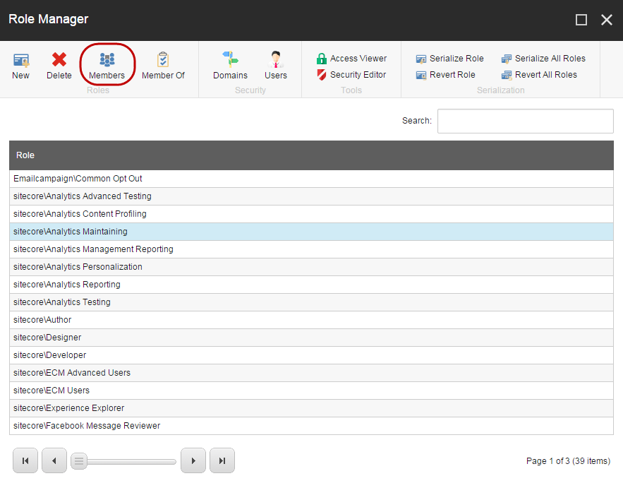
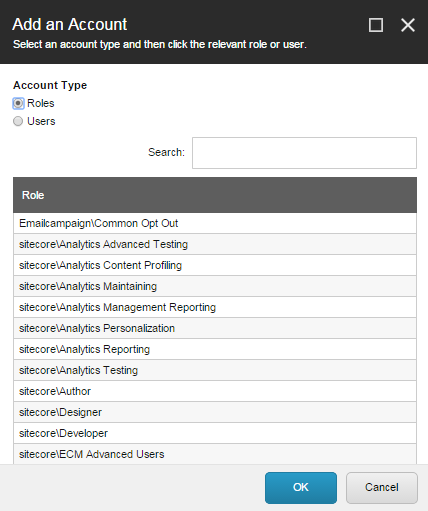

Add or remove a security account from a role
How to add users to a new role or make the new role a member of another role.
When you have created a new role, you can add users to the new role, or you can make the new role a member of another role. In XM Cloud, you can make any security account (users or roles) a member of a role. To make a security account a member of a role:
In the Role Manager, click the role that you want to add a security account to and then click Members.
 Note
To make the selected role a member of another role, click Member Of, and click the roles that you want this role to be a member of.
In the Members dialog box, you can see a list of all the security accounts that are members of the role. To add a new security account to the list, click Add.

Note
To delete a security account from a role, click the account that you want to delete and click Remove.
In the Add an Account dialog box, in the Account Type section, click the type of account (user or role) that you want to add.
 Click the user or role that you want to make a member of the role and then click OK.
If there is more than one page of users or roles, use the buttons at the bottom of the window to browse through the list of users or roles.